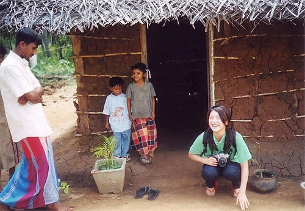
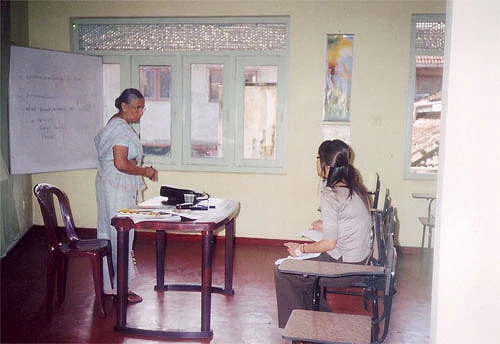
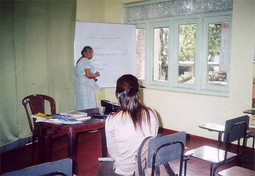
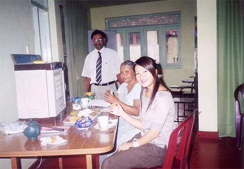
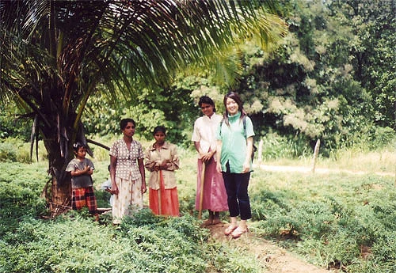

「プログラム参加前からいろいろとお世話になりました。今回２３？２４？日間という長かったような、でも日本に帰ってきてみるとあっという間だったスリランカ。
貴重な体験をいくつもすることができました。
このプログラムに参加する前は、『英語がほんとに苦手で、コミュニケーションが取れるのかな！？』ということを一番不安に思ってました。
私は、『英語を話せるように・・』というより、『自分の身を英語を話す環境において英語に慣れたい！』と思い短期留学を検討してました。
しかし、ヨーロッパやアメリカ、カナダなどは短期間でもコストのことを考えるとちょっときついと思っている時に、インターネットでこのプログラムのことを知ったんです。
コスト的にも他国に比べると安めではあるし、イギリスの植民地だったということから、イギリス英語を話す人々が多いということ、さらに、スリランカには世界遺産が７つもあり、休みの日に世界遺産を見にいける！！ということで、このプログラムの参加を決めました。
大学の授業でアジアの宗教について勉強したことがあるので、仏教がインドから伝わり、最盛期には他国から留学僧がくるほど仏教国として栄えたスリランカの仏教、灌漑設備を整えた古代国家にとても強い関心がありました。
スタッフの方とインターネットだけで連絡を取っていたので、行く直前までほんとに行くという実感がわかなかったものの、細かいとこまでメールで連絡してくれたり、私の質問にきちんと答えてくれたので助かりました。
現地のMr.Shanthaもとても良くしてくれましたし、ほんとに感謝しています。
ありがとうございました。Mr.Shanthaは、世界遺産を見に行く時もいろいろと説明をしてくれたので、よりスリランカの遺産、文化を知ることができました。
また、日本語も少し話せるので、英語だけの生活をしている時に、たまにちょっとした単語でも日本語を話せるのが私には嬉しかったです。

（スリランカでのホームステイについて） スリランカの様々な食文化、手で食べる！という経験はなかなかできるものではないので、とても面白く、帰る頃にはすっかり手で食べることに慣れていました。
また、ホームステイなので実際にスリランカの人々がどのように生活しているか、どのようなものが好きで、どのような価値観を持っているのかなど、本やガイドブックでは知ることのできない情報を体験！することができました。
走っている車の半分（言いすぎ！？）が日本車だったとか・・、最近の若い人たちはスーパーマーケットで買い物するとか・・、シンハラ語のドラマとかＣＭは面白いし、lotteryがすごいメジャーとか思い出すこと全てがすごくいい経験でした。
ホストファミリーに、８歳の女の子がいたので、彼女の存在にずいぶん助けられました。あまり英語の通じない私に一生懸命に話しかけて来てくれたり、鬼ゴッコをしたりして一緒に遊んでいました。
ホストマザーは、カレーを作る際に辛くなりすぎないようにとチリパウダーを控えてくれたりと、おかげでかなりのスリランカ料理を食べることができました。
また、スリランカの文化、生活についてもいろいろと教えてくれました。村に連れて行ってもらったり、結婚式に参加することもできました。
ゴールフェイスホテルで行われた結婚式に連れて行ってもらえたことは、ほんとにラッキーなことですし、スリランカの様々な文化を知ることのできた一つのことといえます。
ホストファザーは、歴史が好きな私にスリランカの歴史や、古代都市、また、スリランカの自然など教えてくれ、本当に勉強になりました。
スリランカという国の印象は、『３０年前？の日本はこんな感じだったのかな』ということです。・家族をとても大切にしていて、家族同士のスキンシップは欧米風。
だけども、かつての日本のように父という存在は大きい。・人々は基本的には親切でフレンドリー。
・食生活はさすが美食の国！確かにカレー料理が多いものの同じものではないので飽きないし、カレー以外にもおいしい食べ物がたくさん！フルーツも安くてしかもおいしい！ ・そして遺跡！！！世界遺産が、北海道よりも一回り小さい島に７つも！！歴史の好きな私にはたまらなかったですね。
気に入らなかったこと・・、話してることに矛盾がある。
最初は『英語をきちんと理解できていないからかな』と思っていたんですけど、どう考えても違う！？『え！？ さっき言ってたことと違う！』と思うことがたまにありました。
その他、持って行けば良かったものは、日本の生活や、制度、地域、食べ物などの写真が載っている本、インスタントラーメン（カップラーメンをホストファミリーにあげたら喜んでくれました）。
傘や服、英語の本などはスリランカのほうが安いのでわざわざ用意しなくても良かったなと思いました。今回、いろいろありましたが、トータル的にとっても刺激的で勉強になりました。
また、是非スリランカに行きたいですね！！次回行くときは自由奔放にバスに乗って今回いけなかったゴールとかにいきたいですね。」

